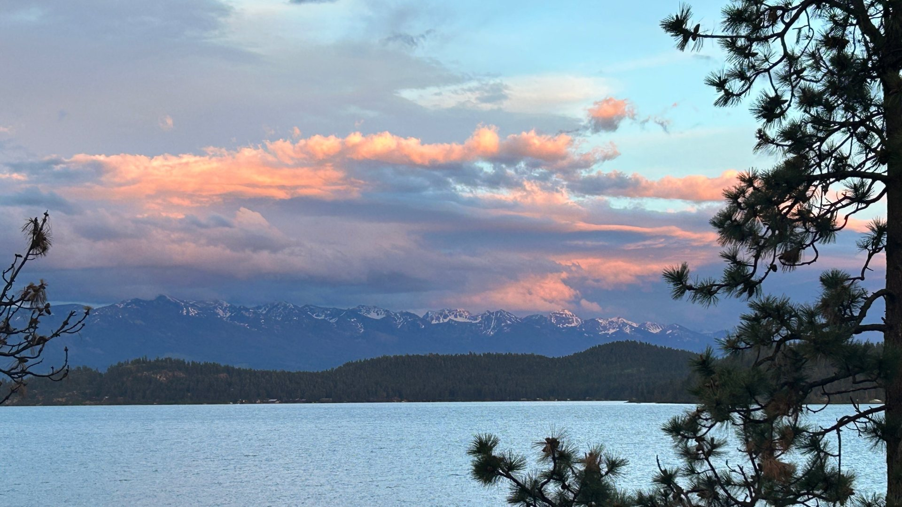

Awesome Books About God and Jesus with Uncle Colby
Julian of Norwich, chapter 40 · Uncle Colby’s translation
Slow, honest reading of the great books about God, for discouraged but earnest seekers. Each episode has about ten minutes of reading, followed by reflections on what it might mean for you. Season one is Julian of Norwich's Revelations of Divine Love.
In May 1373, a thirty-year-old woman in Norwich, England lay so ill that a priest was called to give her last rites. As he held a crucifix before her, she received a series of sixteen visions, which she called “showings,” of Christ's suffering and of God's love. She recovered, and spent the rest of her long life thinking about what she had seen.
She became an anchoress, living in a small cell attached to the Church of St Julian in Norwich, praying and offering counsel through a window to anyone who came. We don't know her real name. She is remembered by the name of her church.
She wrote her visions down twice: first in a short account, and then, after some twenty years of prayer, in a much longer version of 86 chapters. That book, Revelations of Divine Love, is thought to be the earliest surviving book in English written by a woman. It is gentle, daring, and full of hope. In it, God holds all of creation like a hazelnut in the palm of the hand. There is no anger in God, sin is met with compassion, and in the end all shall be well.
This season of the podcast reads the long version chapter by chapter, slowly enough to let each one sink in. Uncle Colby is writing his own modern English translation as he goes, and the quotes on this site come from it.
By day I'm a finance professor at BYU. By night I'm an amateur theologian with a special interest in the women mystics of the Middle Ages, with Julian of Norwich chief among them. I'm a member of The Church of Jesus Christ of Latter-day Saints with strong ecumenical leanings, and I find a great deal of light across the wider Christian tradition, especially in voices like Julian's.
My favorite people are my wife, Misty, and our four kids: Herbie, Teddy, Donna, and Dash. My favorite places are outside. I love to snowmobile, ski, canyoneer, hike, and backpack, and nothing beats time at our family cabin in Montana.
I started this podcast for discouraged but earnest seekers: people who love God but feel worn out, and who are looking for more peace and grace. Each episode, I read about ten minutes from the book, then share what stands out to me, sometimes with a friend joining the conversation. You don't need any background, and you don't need to have it all figured out. Come as you are.
See my story in pictures